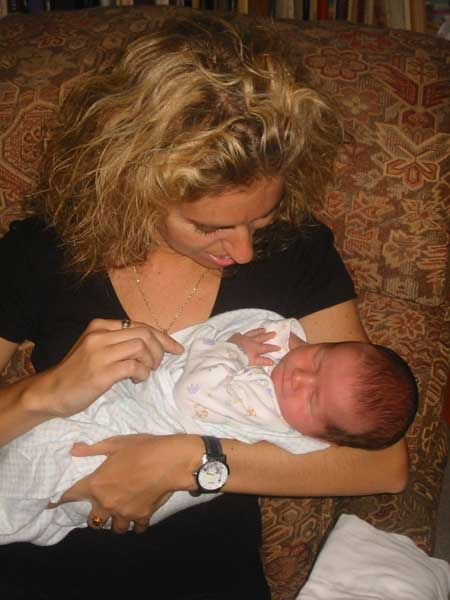
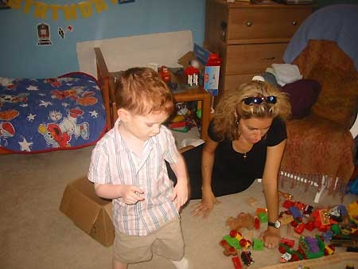

It seems like only yesterday when NYLine's own Jewels Green was parading her fabulous pregnant belly on 54th Street on opening night of Episode III at the Ziegfeld.
Exactly 79 days from that memorable night on August 6th at 3:43am, another new hope was born, Robert Stanton Green, 7 pounds, 14 ounces, 20.5 inches. I recently traveled to the outer rim territory of Philadelphia to see this young padawan for myself. I was awed with his impressive midiclorian count and as you can see in the photo below, he did hesitate to put his hand on his heart and make an oath to the Jedi Order:
Of course, Robert joins his equally adorable padawan brother, Alexander John Green, seen below assisting me in deciphering the Death Star plans:
Congratulations to the entire Green family!